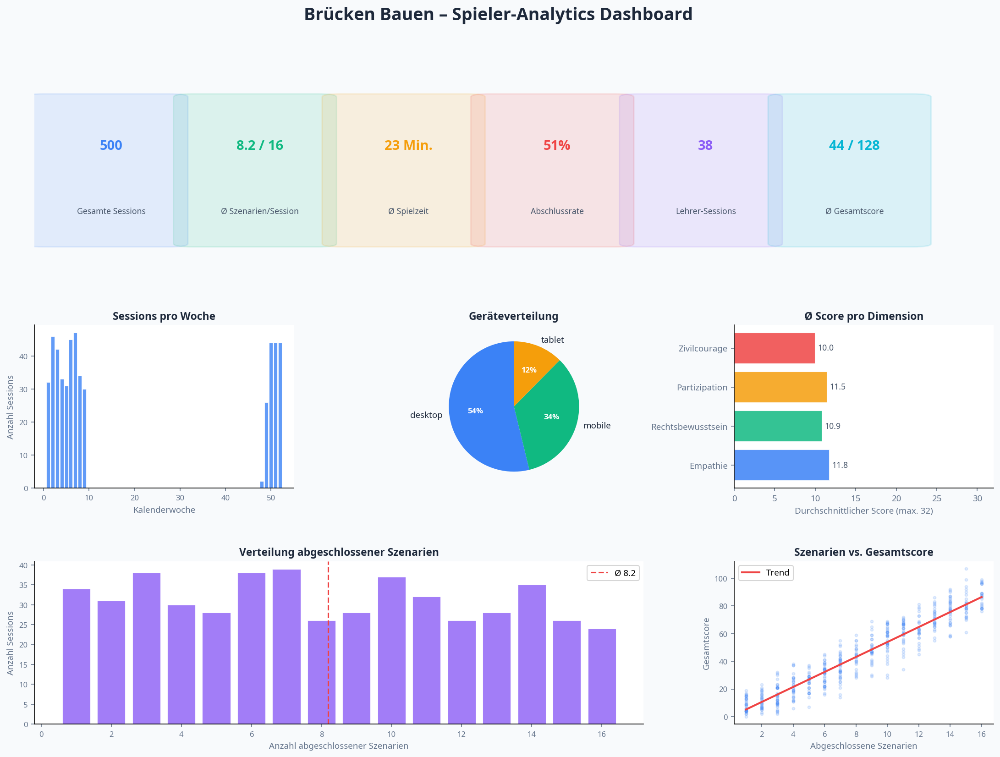
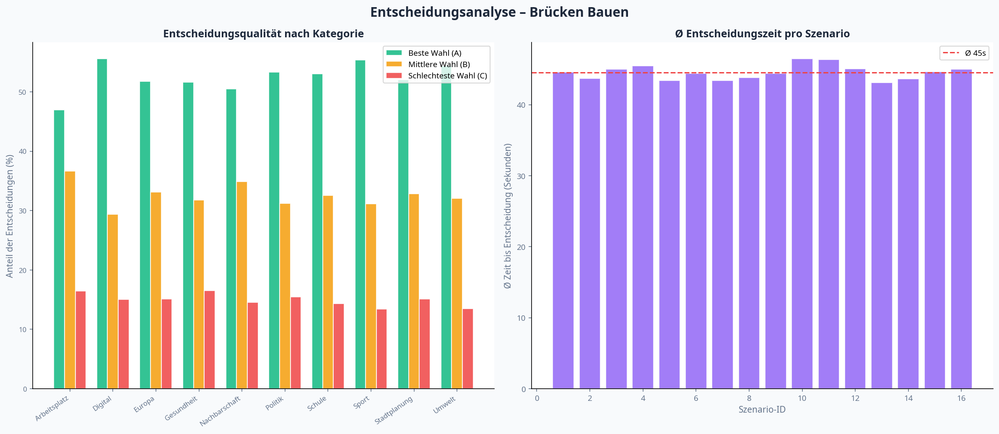

Generiert am 28. February 2026, 14:34 Uhr • Zeitraum: letzte 90 Tage


Empathie ist die am stärksten ausgeprägte Dimension bei den Spieler:innen (Ø 11.8/32).
Zivilcourage zeigt das größte Verbesserungspotenzial (Ø 10.0/32). Hier sollten mehr Szenarien angeboten werden.
Im Bereich Europa treffen Spieler:innen am häufigsten die beste Entscheidung (A).
Die meisten Abbrüche erfolgen nach Szenario 7. Hier könnte eine motivierende Zwischennachricht helfen.
34% der Sessions werden auf mobilen Geräten gespielt. Mobile-Optimierung ist entscheidend.
38 Lehrer-Sessions mit durchschnittlich 2 Schüler:innen pro Klasse. Das Spiel wird aktiv im Unterricht eingesetzt.
| Dimension | Ø Score | Min. | Max. | Std.-Abw. | Bewertung |
|---|---|---|---|---|---|
| Empathie | 11.8 | 0 | 32 | 7.7 | Ausbaufähig |
| Rechtsbewusstsein | 10.9 | 0 | 32 | 7.2 | Ausbaufähig |
| Partizipation | 11.5 | 0 | 31 | 7.5 | Ausbaufähig |
| Zivilcourage | 10.0 | 0 | 30 | 7.0 | Ausbaufähig |